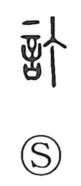

訂

Kun: tadasu | On: tei
to correct ・ emend ・ revise
Explanation
訂 is a phono-semantic character built from 言, meaning speech or words, and 丁, which supplies the on reading tei. 丁 depicts the flat head of a nail and evokes the act of striking it to fix something firmly in place. Applied to language, this image becomes the settling and straightening of words. Early glosses describe the sense as impartially concluding a discussion, which naturally develops into the meaning to correct or emend—an idea still felt in compounds such as 訂正, 改訂, and 校訂.